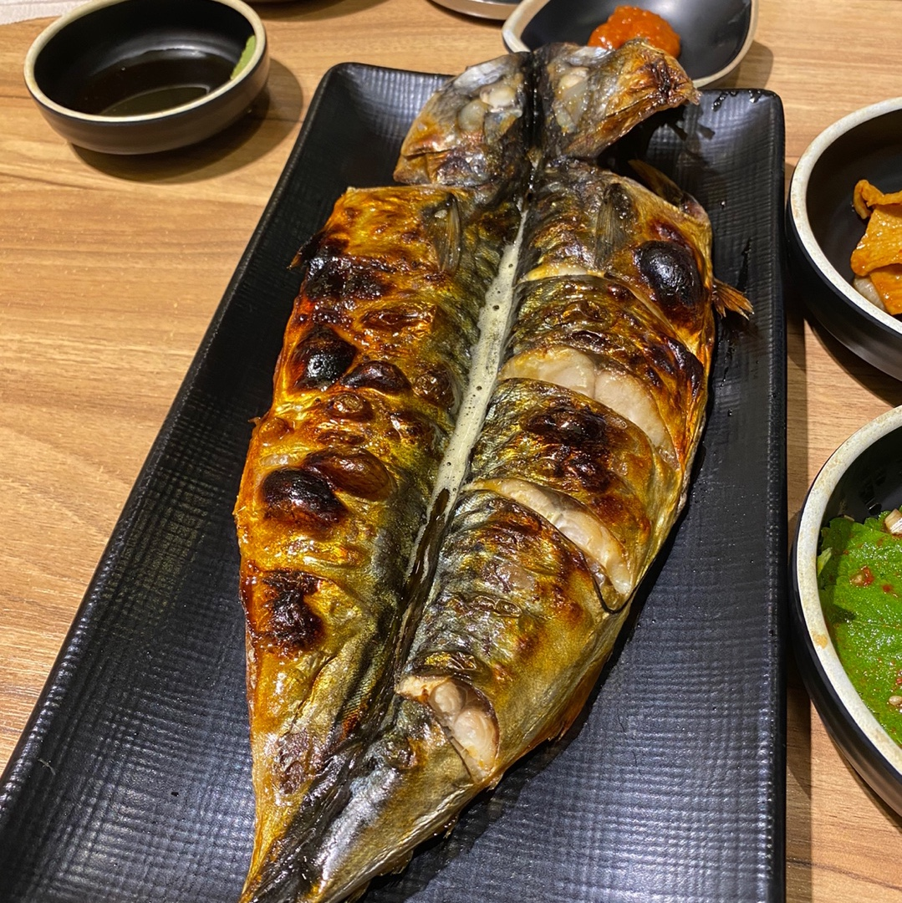
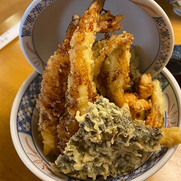
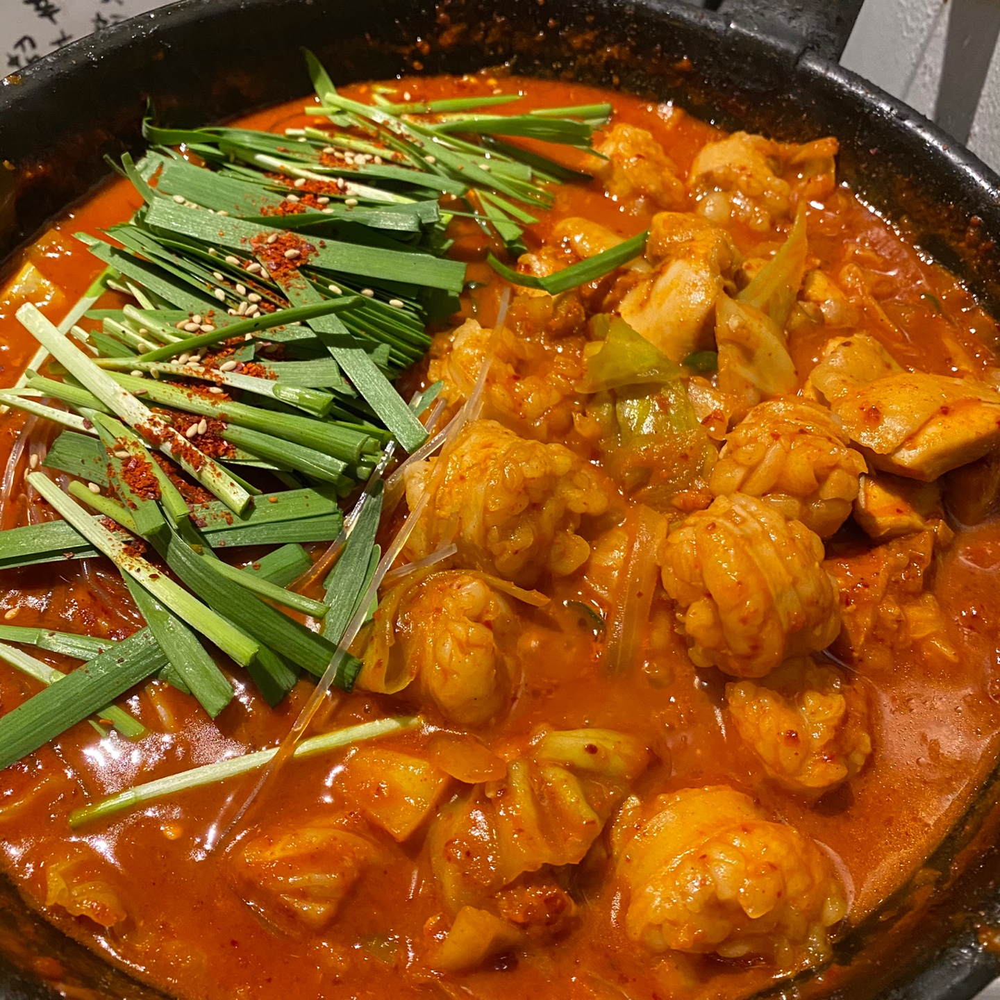

서초구 사평대로 57길 72
신논현 역과 논현역 중간에 있는 생선 구이 맛집
고등어 구이와 삼치 구이가 대표 메뉴다.
전체적으로 카레 맛이 나는데, 구울 때 카레를 바르는 것 같다.
다 먹고 주는 매실음료도 달달하고 시원해서 기분이 좋아진다.

강남구 테헤란로 4길 32
강남역 4번 출구 근처에 있는 텐동 맛집
김, 버섯, 새우, 단호박, 오징어, 가지, 꽈리고추, 온천계란 등을 튀겨서 올려준다.
그 중 새우튀김이 제일 맛있다.

강남구 역삼로 137
곱도리탕과 대창덮밥으로 유명한 맛집
사장님이 생활의 달인에도 출연했다.
집이랑 가까워서 자주 가는데, 항상 웨이팅이 있다.
하지만 오래 기다린게 아깝지 않을 만큼 맛있다.
또 먹고 싶다. ㅠㅠ